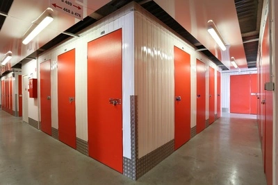

La solution à vos besoins d'espace et de stockage de vos affaires
c'est le garde-meubles ou le self-stockage à Toulouse.
Dans un garde meubles, vous même ou votre déménageur transporte vos
biens et cartons vers un batiment sous surveillance, où vos biens
seront stockés dans un box pendant une période déterminée. Dans un
garde meuble classique dès que vos affaires sont dans le box, vous ne
pouvez plus y accéder jusqu'à la fin de la durée du stockage.
La réponse la plus efficace est la nouvelle génération de garde-meubles: le self stockage. Un box individuel accueille vos biens et vous en avez la clef. L'avantage du self-stockage c'est que quand vous le souhaitez vous pouvez vous rendre à votre box pour ramener ou déposer des meubles et cartons. L'accès est illimité et gratuit, tous les jours. Voici notre sélection de sites toulousains où vous pourrez ranger vos affaires: meubles, matériel ou affaires de sport, cartons. en toute sécurité et flexibilité, puisque vous louez sans aucun engagement de durée, et pourrez partir quand vous le voudrez.
